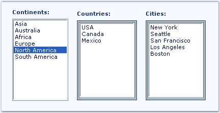
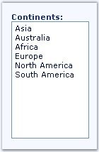
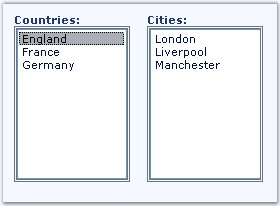

This section illustrates how the content of a listbox in various callbackpanels can be updated, on selecting a list box item without reloading the entire page via CallbackMultiplexer.
The following figure shows a page which contains three listboxes, with Countries and Cities list boxes in separate callback panels. When an item in the Continents listbox is selected it will refresh the listbox contents inside the callbackpanel with appropriate countries and cities information.

Figure 167
Sequence of events to update the content using CallbackMultiplexer are as follows.
1. In design view, drag a CallbackMultiplexer control and 2 CallbackPanel controls from the toolbox and drop it on an .aspx page.
ASP.NET listbox control is configured to call a client side javascript function OnMultiPanelRefresh(param).
23. Add the following markup to lblContinent's listbox control in PageLoad. Note that OnChange property is configured to invoke the client side java script function OnMultiPanelRefresh(param) which takes string "continents" as a parameter.
|
[ASPX]
<ssw:callbackpanel id="CallbackPanel1" runat="server" > <asp:ListBox ID="lbCountries" runat="server"/> </ssw:callbackpanel> <ssw:callbackpanel id="CallbackPanel2" runat="server" > <asp:ListBox ID="lbCities" runat="server"/> </ssw:callbackpanel>
<asp:ListBox ID="lbContinents" runat="server"/> protected void Page_Load(object sender, EventArgs e) { lbContinents.Attributes.Add("OnChange", "OnMultiPanelRefresh('continents')"); } |
OnMultiPanelRefresh(param) function (in client side) refers to the server side CallbackMultiplexer's callback method.
24. Above the closing </head> tag, insert the following markup. This creates a java script function that gets executed when the user selects an item. _sfCallbackMultiplexer1.callback(param) method triggers the server side callback process by passing the value to the param variable.
|
[ASPX]
<script type="text/javascript"> function OnMultiPanelRefresh(param) { _sfCallbackMultiplexer1.callback(param); } </script> |
25. Set the OnCallback event of CallbackMultiplexer to run, when the callback event is triggered. Also this can be set in code view in load event.
|
<ssw:CallbackMultiplexer ID="CallbackMultiplexer1" runat="server" OnCallback="CallbackMultiplexer1_Callback" /> |
User then selects an item in Continents list box during run time.

Figure 168
The OnMultiPanelRefresh(param) function invokes CallbackMultiplexer's object's callback method, which in turn will trigger the callback mechanism that will contact the server and retrieve fresh data for controls in multiple callback panels.
Callback handler of CallbackMultiplexer on the server will update listbox controls with related countries and cities list based on the callback argument.
Here we decide to update CallabackPanel1 and CallbackPanel2. So the listbox controls which are inside the CallabackPanel1 and CallbackPanel2 will be updated. Based on the CallbackArgument, callback panels gets updated on callback.
26. Create a routine to handle the CallbackRefresh event. From the code below, you can see that the handler returns a CallbackEventArgs object. CallbackEventArgs includes a parameter value that carries the string that you had passed in an earlier java script function (param).
27. Inside the CallbackMultiplexer1_Callback() routine, update the value for Countries and Cities listbox after updating these controls. Update the CallabackPanel1 and CallbackPanel2 based upon the CallbackArgument.
|
[C#]
protected void CallbackMultiplexer1_Callback(object sender, Syncfusion.Web.UI.WebControls.CallbackEventArgs e) { if (e.CallbackArgument == "continents") { CallbackMultiplexer1.ControlsToRefresh.Add(this CallbackPanel2); CallbackMultiplexer1.ControlsToRefresh.Add(this CallbackPanel1); } } |
|
[VB.NET]
Protected Sub CallbackMultiplexer1_Callback(ByVal sender As Object, ByVal e As Syncfusion.Web.UI.WebControls.CallbackEventArgs) If e.CallbackArgument = "continents" Then CallbackMultiplexer1.ControlsToRefresh.Add(Me CallbackPanel2) CallbackMultiplexer1.ControlsToRefresh.Add(Me CallbackPanel1) End If End Sub |
Callback will display the refreshed callback content.

Figure 169